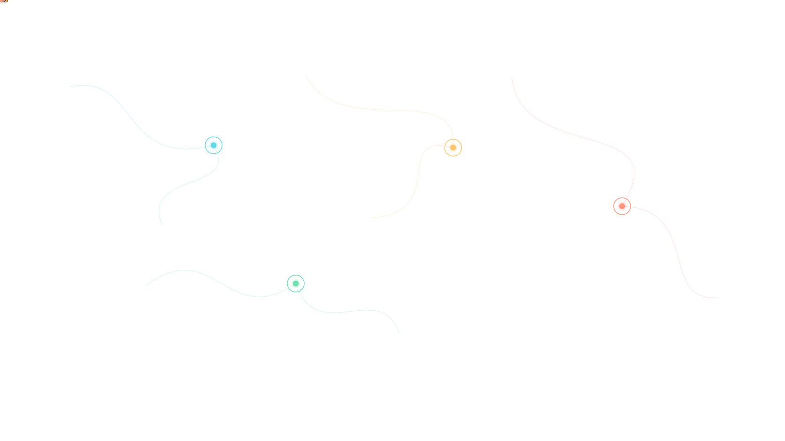
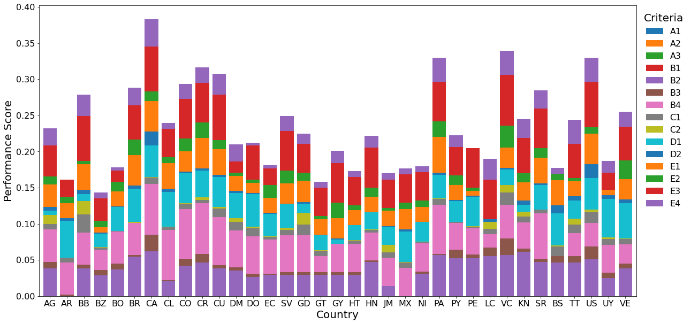
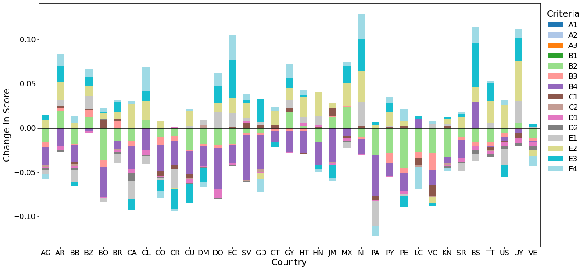

Brazil
11th → 2ndIts reported composite score rises from 0.7616 to 0.9215.

Collaborative research · SCI Q1 · Accepted for publication
How FANMA, MARCOS, and particle swarm optimization connect country rankings, safety profiles, and evidence for better transport planning.
Study at a glance
A single ranking cannot show every strength or weakness in a transport system. This study combines objective weighting, composite rankings, and clustering to compare countries and support targeted safety strategies.
My contribution: Investigation, validation, and writing the original draft, as credited in the manuscript.
The animated cover is a conceptual city scene. Its moving vehicles and four particle centers illustrate transport networks and centroid search; they are not measured traffic or country locations.
Results · MARCOS ranking
Canada ranks first in both benchmark years. Brazil, Uruguay, and Ecuador move up substantially. Switch years to explore the reported scores and rankings.
Its reported composite score rises from 0.7616 to 0.9215.
A 24-place rise, from a score of 0.5522 to 0.8961.
Its reported score increases from 0.4180 to 0.7594.
Model architecture
The FANMA–MARCOS–K-means framework integrates three different tasks: deciding how much each indicator matters, scoring alternatives, and finding comparable profiles.
Assemble the 35-country, 15-indicator dataset for each benchmark year.
Use min-max normalization to compare indicators measured in different units.
Derive objective indicator weights through a distance-to-ideal optimization model.
Compare alternatives with ideal and anti-ideal solutions to calculate utility scores and ranks.
Search for initial centroids with particle swarm optimization, then refine the country groups with K-means.
What PSO changes: Each particle represents a candidate set of cluster centers. It moves according to its own best position and the swarm’s best position, seeking a lower within-cluster sum of squares. These centers initialize K-means. The case study uses four groups; the search for centroids does not by itself select the number of groups.
Source: manuscript Section 3.4, Steps 1–5 and Equations 19–25.
Results · Country profiles
Clustering compares multivariate safety profiles. The reported group membership can differ from the order of the composite ranking, so both views help describe the same transport system.
Membership for 2020, transcribed from manuscript Table 11. Group numbers follow the manuscript. The year controls update both the ranking and the groups.
Results · Model checks
The study evaluates separation and compactness using three clustering metrics. These are the values reported for each method.
| Method | SilhouetteHigher is better | Davies–BouldinLower is better | Calinski–HarabaszHigher is better |
|---|
Weighted rank correlations of FANMA with CRITIC and Entropy across the two years. Table 6.
Weighted rank correlations of MARCOS with TOPSIS and VIKOR. Table 8.
Weighted rank correlation in both years: a moderate association with a broader development index. Table 10.
Normalization has more influence: MinMax comparisons with Vector and Z-Score range from 0.72 to 0.81 (Table 4). The reported results support a sensitivity-aware reading rather than an assumption that every modeling choice produces identical ranks.
What the model measures
The framework includes road infrastructure, user behavior, socioeconomic conditions, and enforcement alongside fatality outcomes.
Source: manuscript Figure 1 and Sections 4.1 and 5.1. Enforcement indicators are reported enforcement scores.
From analysis to planning
The paper deconstructs composite scores and their changes into indicator contributions. This links a broad country comparison to more specific questions about infrastructure, behavior, and enforcement.


Consider road infrastructure and pedestrian outcomes alongside compliance and enforcement. A composite rank alone cannot identify which part of the system needs attention.
Use groups to organize peer learning, then inspect individual indicators. The paper discusses seatbelt use, speed enforcement, and alcohol-related fatalities as examples of different national strengths.
Country-level benchmarking provides context for transport planning. A city intervention still needs local crash, street-design, and road-user evidence before implementation.
Score deconstruction and peer benchmarking: manuscript Sections 5.2–5.4. The connection to local planning is an interpretation of the framework, not a city-level impact estimate.
Scope and next steps
The study depends on secondary data for two benchmark years; missing values are filled with adjacent-year information or interpolation. Data availability, normalization choices, and the fixed four-group configuration limit what can be concluded.
The authors propose updated indicators for emerging transport systems, further algorithmic development, and validation beyond the OAS region. The analysis compares observed profiles; it does not estimate the causal effect of a particular transport policy.
Source: Sections 4.1.2–4.1.3 and 6.2, with the model scope made explicit.
SCI Q1 · Accepted · Publication forthcoming
Enhancing decision reliability through a PSO-optimized hybrid multi-criteria decision-making framework
Shijie Sun, Xinyue Zhang, Jialin Li, Kejun Lu, Anna Qian, Zhanheng Sun, Mingren Zheng, and Faan Chen.
Read the complete methodology, equations, 35-country result tables, robustness comparisons, and policy discussion in the supplied manuscript.
Explore the full paper ↗Full manuscript · PDF. Accepted for publication; the final journal version is forthcoming.